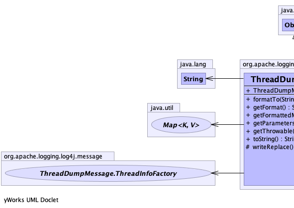
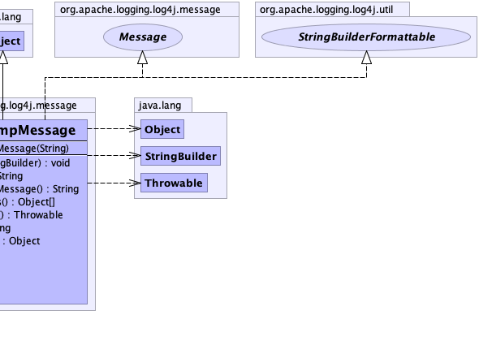

@AsynchronouslyFormattable public class ThreadDumpMessage extends java.lang.Object implements Message, StringBuilderFormattable
|  |  |
| Modifier and Type | Class and Description |
|---|---|
static interface |
ThreadDumpMessage.ThreadInfoFactory
Factory to create Thread information.
|
| Constructor and Description |
|---|
ThreadDumpMessage(java.lang.String title)
Generate a ThreadDumpMessage with a title.
|
| Modifier and Type | Method and Description |
|---|---|
void |
formatTo(java.lang.StringBuilder sb)
Writes a text representation of this object into the specified
StringBuilder, ideally without allocating
temporary objects. |
java.lang.String |
getFormat()
Returns the title.
|
java.lang.String |
getFormattedMessage()
Returns the ThreadDump in printable format.
|
java.lang.Object[] |
getParameters()
Returns an array with a single element, a Map containing the ThreadInformation as the key.
|
java.lang.Throwable |
getThrowable()
Always returns null.
|
java.lang.String |
toString() |
protected java.lang.Object |
writeReplace()
Creates a ThreadDumpMessageProxy that can be serialized.
|
public ThreadDumpMessage(java.lang.String title)
title - The title.public java.lang.String toString()
toString in class java.lang.Objectpublic java.lang.String getFormattedMessage()
getFormattedMessage in interface Messagepublic void formatTo(java.lang.StringBuilder sb)
StringBuilderFormattableStringBuilder, ideally without allocating
temporary objects.formatTo in interface StringBuilderFormattablesb - the StringBuilder to write intopublic java.lang.String getFormat()
public java.lang.Object[] getParameters()
getParameters in interface Messageprotected java.lang.Object writeReplace()
public java.lang.Throwable getThrowable()
getThrowable in interface Message